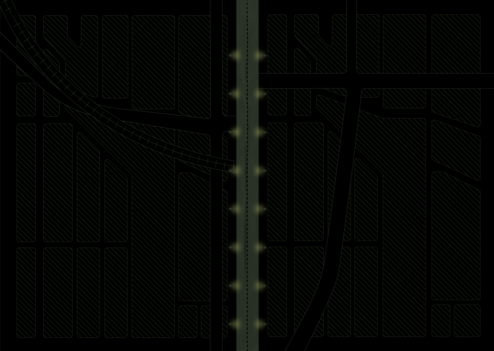

안전 귀가를 위한 안내를 시작합니다.
지도 위로 마우스를 올려주세요!

고령 운전자 사고
발생 통계와 원인
1. 신체적 이유
시력 저하는 고령 운전자가 도로 표지판, 신호등, 보행자 등을 명확히 확인하기 어렵게 만들며 야간 운전 시나 비 오는 날과 같은 시야가 제한되는 상황에서는 도로의 위험 요소를 파악하는 데 큰 장애가 됩니다. 청력 저하 또한 중요한 소리를 놓치게 만들어 경적 소리나 구급차의 사이렌과 같은 주위 소음을 적시에 듣지 못하여, 안전 운전에 큰 위험 요소가 될 수 있습니다. 이렇게 고령운전자의 신체적인 변화의 원인들은 사고 위험을 높이는 주요 원인 중 하나입니다.
2. 인지적 이유
판단력 저하는 교차로에서 신호 변화나 차량 속도를 고려할 때 정확한 판단을 어렵게 하여 우선순위 결정과 보행자 상호작용에서 위험을 증가시킵니다. 주의력 저하는 복잡한 교차로에서 차량과 보행자를 동시에 인식하는 데 어려움을 초래해 중요한 정보를 놓치거나 반응이 늦어지게 하며, 기억력 감소는 새로운 도로 환경이나 교통 규칙을 잊어버리게 만들어 잘못된 경로로 가는 위험을 높입니다. 이처럼 인지적 변화들은 도로에서 상황을 결정하는 데 큰 어려움을 주는 주요 원인입니다.

고령 운전자 사고 해결책
고령 운전자의 안전 사고 예방을 위해 실천할 수 있는 방법 4가지
 1번.정기적인 건강 검사 받기
1.정기적인 건강 검사 받기
1번.정기적인 건강 검사 받기
1.정기적인 건강 검사 받기
정기적인 건강 검사를 통해 운전 능력을 평가하고,
필요한 경우 보조 장치를 사용하거나 운전을 자제하는 것이 중요합니다
2번.안전 교육 프로그램 참여 하기
2.안전 교육 프로그램 참여 하기
고령 운전자를 대상으로 하는 안전 교육 프로그램에 참여함 으로 최신 교통 법규를 숙지하고, 위험 상황에서의 대처법을 배울 수 있습니다.
3번.안전한 운전 환경 맞춤 설정하기
3.안전한 운전 환경 맞춤 설정하기
주야간이나 날씨와 같은 외부 조건에 따라 본인에게 맞는 운전 환경을 적절히 조정 후 안전한 운전 조건을 선택하여 사고를 예방할 수 있습니다.
4번.대중교통 또는 카 셰어링 이용하기
4.대중교통 또는 카 셰어링 이용하기
주기적으로 대중교통이나 택시, 카셰어링을 이용하여 운전 빈도를 줄임으로써 피로와 사고 위험을 줄이고, 안전하게 차량을 이용할 수 있습니다.
안내를 종료합니다
CONTACT
bibleluvv@hknu.ac.kr
tngk1107@hknu.ac.kr
CLASS
Hankyung National University
Visual Media Design Digital Publishing
@2024-2